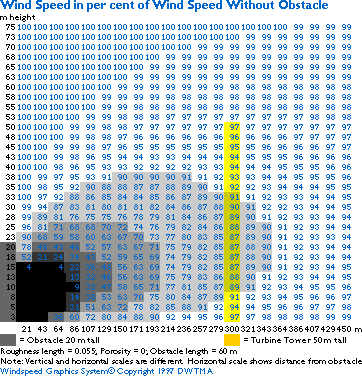

Wind Shade


This graph gives you an estimate of how wind speeds decrease
behind a blunt obstacle, i.e. an obstacle which is not nicely
streamlined. In this case we use a seven story office building,
20 metres tall and 60 metres wide placed at a distance of 300
m from a wind turbine with a 50 m hub height. You can quite literally
see the wind shade as different shades of grey. The blue numbers
indicate the wind speed in per cent of the wind speed without
the obstacle.
 At the top of the yellow wind turbine tower
the wind speed has decreased by some 3 per cent to 97 per cent
of the speed without the obstacle. You should note that this
means a loss of wind energy of some
10 per cent, i.e. 1.033 - 1, as you may see in the
graph at the bottom of this page.
At the top of the yellow wind turbine tower
the wind speed has decreased by some 3 per cent to 97 per cent
of the speed without the obstacle. You should note that this
means a loss of wind energy of some
10 per cent, i.e. 1.033 - 1, as you may see in the
graph at the bottom of this page.
 If you have a reasonably fast computer (or
a bit of patience with a slower one) you can plot tables and
graphs like this one using the wind
shade calculator in a couple of pages.
If you have a reasonably fast computer (or
a bit of patience with a slower one) you can plot tables and
graphs like this one using the wind
shade calculator in a couple of pages.


|
Back | Home
| Forward |
© Copyright 2000 Soren Krohn.
All rights reserved.
Updated 9 September 2000
http://www.windpower.org/tour/wres/shade.htm